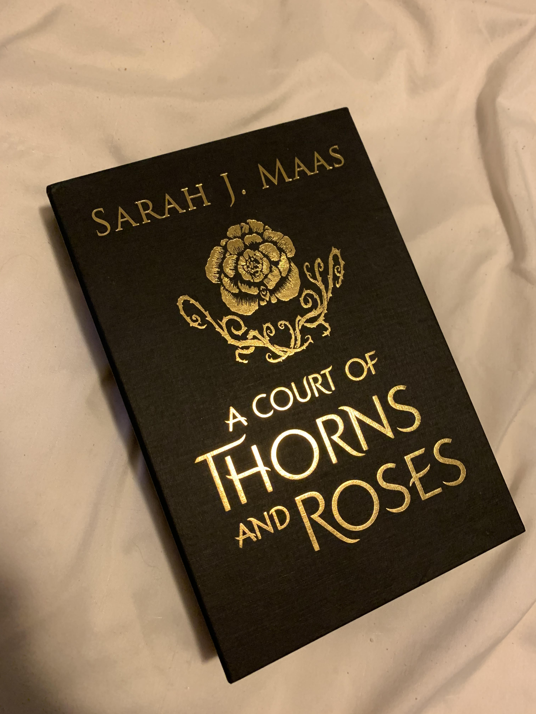

Books I have read in 2020
Two books I read this year that I really enjoyed was Red, White and Royal Blue by Casey Mcquiston a adult queer romance between the son of the president of the united states (who is a woman and latino) and the prince of england. I love a good LGBTQ romance and the writing in this book was phenomenal
I also enjoyed Lobizona by Romina Garner. A YA fantasy set in Argentine folklore.
Favourite books of all time
A Court of Thorns and Roses by Sarah J Mass is a beauty and the beast retelling with a twist. The book follows Feyre who grown up her whole life being told that the Fae who occupy the border on the other side of this wall are bad, they took everything from the humans well one day she is unexpectedly trusted into this world and her life take a wild turn.

I want to preface this by saying I don't agre with the views of J.K Rowling. That out of the way this story was a huge part of my upbringing and i can't make a favourite series of all time without including it. It introduced me to fantasy, it took me away from a dark time in my life and the movies are ones i watch constently "